{
"config": [
{
"type": "execute",
"parameters": {
"command": "mkdir -p '/home/user/research' && printf %s 'UEsDBBQACAgIAFamCl0AAAAAAAAAAAAAAAALAAAAX3JlbHMvLnJlbHOtks9qwzAMh+99CqN747SFMUacXsqgtzK6B9BsJTGJ/2BrW/b2M2OwdZSwwY6Wf/r0IdTsZzeJF0rZBq9gU9UgyOtgrO8VPJ7v17ewb1fNA03IJZIHG7MoPT4rGJjjnZRZD+QwVyGSLz9dSA65PFMvI+oRe5Lbur6R6TsD2gumOBoF6Wg2IM5vkX7DDl1nNR2Cfnbk+cqIH4lCxtQTK5gn+RrS+BTCWBUoyOsu27+6mAUXR4wGGaUOidYxFUhiS/nLqnSfSjl/JJa8dv+5I5qZvCGzrIQxfhqtGnlxC+07UEsHCGu/dgTfAAAAQgIAAFBLAwQUAAgICABWpgpdAAAAAAAAAAAAAAAADwAAAHhsL3dvcmtib29rLnhtbI1T23KbMBB971cwere5OKGOxzjj4jDJTG8Tp8ljR8BiVAuJkZbYbqf/3kWYNJ32oQ+A9qKzZ3cPy+tjI71nMFZolbBwGjAPVKFLoXYJ+/KQTebMs8hVyaVWkLATWHa9erM8aLPPtd57dF/ZhNWI7cL3bVFDw+1Ut6AoUmnTcCTT7HzbGuClrQGwkX4UBLHfcKHYgLAw/4Ohq0oUsNFF14DCAcSA5EjsbS1ay1bLSkh4HBryeNt+5A3RTrksmL96of3ZeDkv9l2bUXbCKi4tUKO1PnzKv0GB1BGXknklR0h101KFXEiBpzH3DyyNdIXqkbN3PAo42N/x3nTQt9qI71ohl9vCaCkThqY7lyXGKIp/Rbb9xB54bkfn8UmoUh8SRrs6vTof3PFJlFjTJuPZ/GL03YLY1ZiweXgVMQ95ft9PLGFxQNcqYSy6Ig6FUyfPQPV6ixryX3Xkljd+PeUmS8S0ybkq4KvpVE+ZYnclMXDCQUp5FlbkkpibhaCAuSsjhzzCUdsFLUQgGDfuThGVsOdmoPqgS4JYE9o5/rKts70BiZzIToMg7GHhiO8tuu9ZWlLT+S95SZEbGATltMW8zoiE/XgbR3E6j6NJtA5nkzC8uZy8m11cTrKbLKMBppv0KvtJOnOoC3rSgb5FQz/NPVTbE634OGhu7Sj5lDW8HTN/VMbqF1BLBwgnxXYZBAIAAH8DAABQSwMEFAAICAgAVqYKXQAAAAAAAAAAAAAAAA0AAAB4bC9zdHlsZXMueG1s7VhdT9swFH3fr7D8PpKWUmBKgxio014mtJZp0rQHkziJhz8i24WGX891nKZJC0zqHlakPtn3+J7jk2tbtRtdLAVHD1QbpuQED45CjKhMVMpkPsG38+nHM4yMJTIlXEk6wRU1+CL+EBlbcTorKLUIFKSZ4MLa8lMQmKSggpgjVVIJI5nSglgIdR6YUlOSGkcSPBiG4TgQhEkcR3IhpsIalKiFtGCjhZBvvqYAjkcYebkrlYKVL1RSTTgO4ihoBOIoU3KtM8IeiCPzhB4IB5HQpUsiqI+v6R/yY4FmRBo3kBHBeOWHhrWwp78tcqmZt9Glh3tDrxtXGsZ5W5oh9kAclcRaquUUAtT051UJ9ZWw4F6mzvtLdq5JNRiedAh1A/PeKZ3CBusurodQykiuJOG35QRnhBuKW+haPcoVGEecZhaENcsL11pVBk7EWiWgs+K4qb1y24HpE8r5zO3Wn9n660MQXWbbu0vWARwC573peqUmIGXJq6lyIlYvaAN8rlN60CVnuRR0I/FGK0sTWx+2Go4jskpEhdLsCaTdAubN5nZn07LEQf57MbJ0ab8rS7wKeHrUpJwD2BaRybSeGMZMoZm8n6spa4ehTGVrA3GV3NN0ZbJgKVA7mcEy26hUuK7TYNc6NT43C9WFu5VabYP3Y2Z4MPOKmZ3P1sHMwczBzMHMwcwuZkbH+/RLORrslZvRXrkZ7pOb8/9sJuhe3/1lvnOPH+x6jV9m2867fv7R+ju40wdNKTsPpLasY9xBkXtqTvA39/LmncrdLRi3TPoo2CZcKSHIKn9w0iMcv0pAv8LfLWncI41fJC20pjKpWs5pjzN6i9Ob66zHO32Jd0N1AmvQUs57FP/0XRcTgvWfJPEzUEsHCD/UgMWRAgAAaREAAFBLAwQUAAgICABWpgpdAAAAAAAAAAAAAAAAGAAAAHhsL3dvcmtzaGVldHMvc2hlZXQxLnhtbL2Z33ObOBDH3++vYHjo09X8sLFJa7uT2Mn1ZtKmc07bmXtTQMS6AKJC2En++lsJjIkkX7iZDH6wjfRld/VZYdbL/NNjllo7zEpC84XtjVzbwnlEY5LfL+zvt1fvQ9sqOcpjlNIcL+wnXNqflr/N95Q9lFuMuQUG8nJhbzkvPjhOGW1xhsoRLXAOMwllGeJwyO6dsmAYxfKkLHV81506GSK5XVv4wPrYoElCIrymUZXhnNdGGE4Rh/DLLSnKg7XHuJe9mKE9LPUQTyfEdT3T2vMmmr2MRIyWNOGjiGZNaPoqz5yzF+vMoj6BZYg9VMV7MFzA4u5ISviTjNFezqXxb8xKSMox+0JjyEuC0hLDXIHu8Qbz74Wc57f0Gwwcpp3l3GlOXs5jAghF2i2Gk4V97n249AIhkYofBO/Lzner3NL9FQRYpag82JODfzASX5McwyhnVTP4F92vaPoZSMDW6k78jQHZYYCR+y2EeI0T3prk6G6DUxxxHHfPu6l4Ck42T9kdTVsDMU5QlXIRArij7DC+g4gXdi54pmCSFsLFCqepWKdtRUL7J9ifTmzrmdJsE6EUKHmu2zn+Kk9XRwXPa/REK4kFTMCkuBjuKH0QI8KsK5IkFyHwFkhcOE0QtoVgdIePwRyP61Ot8leTkGO+hOHu90NmruSOgVQ3IADCTxLzrQh65Ia+O/b8oMUESfmMBXKY9kdwYT9DMg4jDX5ac77GO5yCXgbUHQMP9fqcFwEs58C0lO+CboqKUuSvMRpVJadZE1mdoS2JY5wb3UqfGXqEKOGT5PKz5E8iQwJ2u0B/Kgi9rUu/cembXAYj13t7l+PG5di8yqn/9i4njcuJwWU4moZv7zFoPAamRXojmUmn3kP1zy/iaDlndG8xmf/ab73dWlfHnazEUKv/Y2tL99rqYNHCnbgqS6mAk0sY3S3dubMTATaKC13hvVSsdIX/UrHWFeOXiktdMWkVDrBpAfkDA/K1wAIFUFeR18sPFYgrXeOOJp6KSVcpqC/1aKZmTOOBMY1fxTTugUnXCExnCiaDJQWTHs0JTJOBMU20wGYKpkkPTLoGfjvDUMGkq9TdpEdzAlMwMKbgVUxBD0y6xh3NXAXC2mBJwaRHE5oxTQfGNNUCUy6Vi2kPTLoG/hv5EwWTQaVg0qM5gWk2MKbZq5hmPTDpGsDkqbvJYEnBpEdzAlM4MKZQv9GrtUCor26qctI1UL6Olfv9Wlep20kP58SP09nAnM5e53TWg5OuAU6+eq8zWFI46eGc4OS5Q9eWrk5KyfLFC80pVAaROwo85Z6wNsjUTWUKyT+Ba/BS3FBpa7i8Prh0EeDytaLcYEvFZQjpFK6hC3NPr4W9sYqrT21uELkj11VvgAaZtrsMIZ3CNXSB7uk1sY7LUFnru8tUpLvuVMWlyzRchpBO4Rq6UPf02tibqLj61OoGkTsKJ4GK6/Vq3RDSicrBG7pe9/QSWafVp2Q3iIDWWL0rmmyptF6v2p1O+6VgJOc3hWyuW1uMxFOBY/P3/tj4VUc2mLfdIcrIM805Slc455h1ekk7zDiJ9AmnbmN/QeyegONUtofhX0o4C5qe8fGQ00I+tgj8WfuCTN5RDqkzzWxlT/poIKGUd46dtoVeFVaBCsw25BnLeqrsNIlla/3Qam0O296qbQkTN0z6iek+v93i/AZWC7uHEVisfFyxsAvKOEOEQ7gpih7O8/jnlvC2W2/FDHUa4xFO0xXNxHOPUvS2cyz8spKLjvTXKrvDdaesKvGVOqymYl2QhT0WCznk4DgS0YKInMpOZ03rSjKyYpIkkKecS/vHMA/DN3F8uTteP8s5jeP6EcDyHcqKjyv5/u5XRfnHNf4H/aisDWYk+f2C0od6WCo8X36cz52jAWGrDuP/2hIcLPn9mzTYWJk73bXBYftEa/kvUEsHCE3BvlGiBQAAFRsAAFBLAwQUAAgICABWpgpdAAAAAAAAAAAAAAAAGgAAAHhsL19yZWxzL3dvcmtib29rLnhtbC5yZWxzrZFNa8MwDIbv/RVG98VJB2OMOL2MQa/9+AHGUeLQxDaS1rX/fi4bWwpl7NCT0Nfzvkj16jSN6ojEQwwGqqIEhcHFdgi9gf3u7eEZVs2i3uBoJY+wHxKrvBPYgBdJL1qz8zhZLmLCkDtdpMlKTqnXybqD7VEvy/JJ05wBzRVTrVsDtG4rULtzwv+wY9cNDl+je58wyA0JzXIekTPRUo9i4CsvMgf0bfnlPeU/Ih3YI8qvg59SNncJ1V9mHu96C28J261Qfuz8JPPyt5lFra/e3XwCUEsHCE/w+XrSAAAAJQIAAFBLAwQUAAgICABWpgpdAAAAAAAAAAAAAAAAFAAAAHhsL3NoYXJlZFN0cmluZ3MueG1slZNBT8MwDIXv/IooJzisaTeB0NR26iYhJMZA2xDi6HWmrWicEKcV/HvCuHFA4ej483svcpIvPnQvRnTcGSpklqRSINXm2FFTyKf9zeRaCvZAR+gNYSE/keWiPMuZvQijxIVsvbdzpbhuUQMnxiKFzqtxGnwoXaPYOoQjt4he92qapldKQ0dS1GYgX8jZTIqBuvcBVz8H2aUsc+7K/GQyZwt18A4qjG5EWe5A2x5z5ctcfWN/oM8wYo/U+Fack76ImqkObNwBqI6z2KLtuxp8HP1g0YE3Lgpe7qpJmsWlSMQG3kAPDuKlp1HoOhGP6J0Z/6E8i1N+2cXe74TG5b1PRBVe4yFuIav9erJcV5u7KPr210ZU+AnlF1BLBwg0pBReGAEAAEcDAABQSwMEFAAICAgAVqYKXQAAAAAAAAAAAAAAABEAAABkb2NQcm9wcy9jb3JlLnhtbG2RzU7DMBCE7zxF5HviBCSEoiSVOHCiElKpxNXY29TFf7K3Tfv2OAk1ReS2M/t5bO82q7NW2Ql8kNa0pCpKkoHhVkjTt2T7/pI/kSwgM4Ipa6AlFwhk1d013NXcenjz1oFHCSGLQSbU3LVkj+hqSgPfg2ahiISJzZ31mmGUvqeO8S/WA70vy0eqAZlgyOgYmLuUSH4iBU+R7ujVFCA4BQUaDAZaFRX9ZRG8DosHps4NqSVeHCyi12aiz0EmcBiGYniY0Pj+in6sXzfTV3NpxlFxIF0jeM09MLS+a+itiLWAwL10GEc+N/8YUStm+mOcTwcm324mJFnj5BULuI472kkQz5eYseBFy8NJjnvtyolIcrwiHD8PwHG+P4lYo0QFs30t/+26+wZQSwcILcuMlCcBAAA3AgAAUEsDBBQACAgIAFamCl0AAAAAAAAAAAAAAAAQAAAAZG9jUHJvcHMvYXBwLnhtbJ2QTW/CMAyG7/sVVcS1TSgbIJQGbZp2QtoOHdqtyhIXMuVLSYrKv18ADTjPJ/u19dh+6Xo0ujhAiMrZBk0rggqwwklldw36bN/KJSpi4lZy7Sw06AgRrdkD/QjOQ0gKYpEJNjZon5JfYRzFHgyPVW7b3OldMDzlMuyw63sl4NWJwYBNuCZkjmFMYCXI0l+B6EJcHdJ/odKJ031x2x595jHagvGaJ2AU39LWJa5bZYCRLF8L+uy9VoKn7AjbqO8A7+cVeFHNqkVVTzbKDmP3tZx388fibqDLL/yASHhGJi+D0rKsKb6Hncjbi9Vs+lSRHOeBP43im6vsF1BLBwgZ5zXq+QAAAJoBAABQSwMEFAAICAgAVqYKXQAAAAAAAAAAAAAAABMAAABbQ29udGVudF9UeXBlc10ueG1svVQ7T8MwEN77KyKvKHbLgBBK2oHHCJUoMzLxJTGNH7Ld0v57zilUVQkpiIjJsu++l092NtuoJlmD89LonEzomCSgCyOkrnLytLhLL8lsOsoWWws+wV7tc1KHYK8Y80UNintqLGislMYpHnDrKmZ5seQVsPPx+IIVRgfQIQ2Rg0yzGyj5qgnJ7QaPd7oIJ8n1ri9K5YRb28iCByyzWGWdOAeN7wGutThyl344o4hse3wtrT/7XsHq6khAqpgsnncjXi10Q9oCYh7wup0UkMy5C/dcYQN7jkkYHThPl9KmYW/GLV+MWdL+a+9QM2UpCxCmWCmEUG8dcOFrgKAa2q5UcalP6PuwbcAPrd6S/iB5C/CsXSYDm9jzn/CxG/fhHP5p9L7mDsRjcPi+B5/AIXefD8TPnbEefwYHvzfxmTuiU4tE4ILsH/1eEan/nBriWxcgvmqPMtZ+lNN3UEsHCI/25TZZAQAAVwUAAFBLAQIUABQACAgIAFamCl1rv3YE3wAAAEICAAALAAAAAAAAAAAAAAAAAAAAAABfcmVscy8ucmVsc1BLAQIUABQACAgIAFamCl0nxXYZBAIAAH8DAAAPAAAAAAAAAAAAAAAAABgBAAB4bC93b3JrYm9vay54bWxQSwECFAAUAAgICABWpgpdP9SAxZECAABpEQAADQAAAAAAAAAAAAAAAABZAwAAeGwvc3R5bGVzLnhtbFBLAQIUABQACAgIAFamCl1Nwb5RogUAABUbAAAYAAAAAAAAAAAAAAAAACUGAAB4bC93b3Jrc2hlZXRzL3NoZWV0MS54bWxQSwECFAAUAAgICABWpgpdT/D5etIAAAAlAgAAGgAAAAAAAAAAAAAAAAANDAAAeGwvX3JlbHMvd29ya2Jvb2sueG1sLnJlbHNQSwECFAAUAAgICABWpgpdNKQUXhgBAABHAwAAFAAAAAAAAAAAAAAAAAAnDQAAeGwvc2hhcmVkU3RyaW5ncy54bWxQSwECFAAUAAgICABWpgpdLcuMlCcBAAA3AgAAEQAAAAAAAAAAAAAAAACBDgAAZG9jUHJvcHMvY29yZS54bWxQSwECFAAUAAgICABWpgpdGec16vkAAACaAQAAEAAAAAAAAAAAAAAAAADnDwAAZG9jUHJvcHMvYXBwLnhtbFBLAQIUABQACAgIAFamCl2P9uU2WQEAAFcFAAATAAAAAAAAAAAAAAAAAB4RAABbQ29udGVudF9UeXBlc10ueG1sUEsFBgAAAAAJAAkAPwIAALgSAAAAAA==' | base64 -d > '/home/user/research/absorbance_run.xlsx' && printf %s 'UmVxdWlyZW1lbnQsU3BlY2lmaWNhdGlvbg0KT3V0cHV0IGZvcm1hdCxQREYNCkZpbGUgbmFtZSx0YWJsZV9zMy5wZGYNClNhdmUgbG9jYXRpb24sc2FtZSBmb2xkZXIgYXMgdGhpcyBjaGVja2xpc3QNClBhZ2Ugb3JpZW50YXRpb24sTGFuZHNjYXBlDQo=' | base64 -d > '/home/user/research/journal_checklist.csv'",
"shell": true
}
},
{
"type": "open",
"parameters": {
"path": "/home/user/research/absorbance_run.xlsx"
}
}
],
"evaluator": {
"func": "check_include_exclude",
"result": {
"type": "vm_command_line",
"command": [
"python3",
"-c",
"import sys, traceback\ndef _main():\n import os, re, sys\n path = \"/home/user/research/table_s3.pdf\"\n problems = []\n if not os.path.isfile(path):\n problems.append(\"missing \" + path)\n else:\n data = open(path, \"rb\").read()\n if not data.startswith(b\"%PDF\"):\n problems.append(\"file is not a PDF\")\n else:\n m = re.search(rb\"/MediaBox\\s*\\[\\s*0(?:\\.\\d+)?\\s+0(?:\\.\\d+)?\\s+([\\d.]+)\\s+([\\d.]+)\", data)\n if not m:\n problems.append(\"no MediaBox found in PDF\")\n else:\n w, h = float(m.group(1)), float(m.group(2))\n if w <= h:\n problems.append(\"page is %sx%s, not landscape\" % (w, h))\n for p in problems:\n print(p, file=sys.stderr)\n print(\"FAIL\" if problems else \"PASS\")\n\ntry:\n _main()\nexcept Exception:\n traceback.print_exc(file=sys.stderr)\n print(\"FAIL\")\n"
]
},
"expected": {
"type": "rule",
"rules": {
"include": [
"PASS"
],
"exclude": [
"FAIL"
]
}
},
"postconfig": [
{
"type": "activate_window",
"parameters": {
"window_name": "absorbance_run.xlsx - LibreOffice Calc",
"strict": true
}
},
{
"type": "sleep",
"parameters": {
"seconds": 0.5
}
},
{
"type": "execute",
"parameters": {
"command": [
"python",
"-c",
"import pyautogui; pyautogui.hotkey(\"ctrl\", \"s\");"
]
}
},
{
"type": "sleep",
"parameters": {
"seconds": 0.5
}
}
]
}
}
step 1 19:05:48
THINKINGThe task mentions "the requirements checklist beside it specifies." I need to see what's beside the table. The current view shows data but I don't see a checklist beside it. Let me take a screenshot to look more carefully — there may be a checklist to the right or in another column that I need to scroll to see, or perhaps it's a separate element I'm missing. Let me first take a screenshot to examine the current state fully.
ACTIONI'll start by taking a screenshot to see the current state and locate the requirements checklist that's supposedly beside the table.
THINKINGI see the data table in columns A-E, rows 1-15. But the task references "the requirements checklist beside it." I don't see a checklist in the visible area to the right of the table (columns F onward are empty). The checklist might be:
1. In another sheet
2. Further down below the table
3. In a separate file/document
There's only one sheet tab "absorbance_run". Let me look more carefully. "Beside it" suggests it's near the table. It could be further to the right (columns beyond E that appear empty in this view, but maybe there's content further right that got cut off). Or it could be a separate file.
Let me first dismiss the notification bars, then look around. The most likely place for a "checklist beside it" would be further right in the same sheet. Let me scroll right to check, but the columns F-U look empty.
Actually, "beside it" more likely means in a nearby document or another area. Let me check the file system to see if there's a related requirements file. But first, let me dismiss the notifications and look for anything. Let me scroll right a bit to confirm no content is hidden to the right, and also check if there are other files in the directory.
Actually, a better approach: let me look at the file's location and check for a companion requirements file. But I can't use terminal directly here except through a terminal app. Let me first close the notification bars and examine the sheet more. Let me scroll right to be sure.
Let me close the two notification bars first by clicking the X buttons.
ACTIONI see the data table in columns A-E. The task mentions a "requirements checklist beside it," but I don't see one in the visible area. Let me dismiss the notification bars and investigate where this checklist might be.
EXECUTED (pyautogui in VM)pyautogui.click(1843, 223)
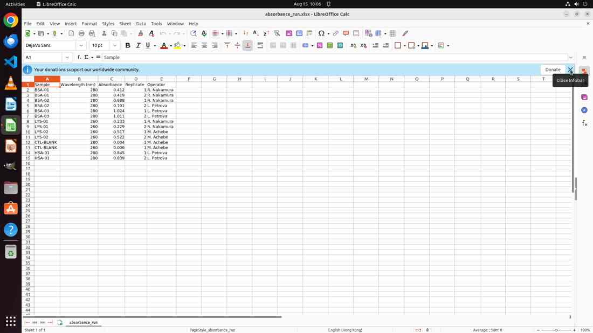
step 3 19:06:22
THINKINGOne notification bar remains. Let me close it too, then investigate. The "requirements checklist beside it" is the key. It's not visible in the sheet to the right. It could be a separate file in the same directory. Let me close this second bar and then open a file manager or terminal to look for a companion file.
Actually, let me reconsider. "Beside it" - the checklist could be another file next to this file in the file system. I should find the file's location. The title is "absorbance_run.xlsx". Let me open a terminal to explore. But I don't have a direct bash tool listed - I only have the computer tool. Wait, the system capability mentions bash tool but my available functions only include "computer". So I need to use GUI.
Let me close the second notification bar first.
ACTIONLet me close the second notification bar as well.
EXECUTED (pyautogui in VM)pyautogui.click(1843, 223)
step 4 19:06:36
THINKINGNow the notifications are gone. The table occupies A1:E15. There's no checklist visible in the sheet to the right or below. The task says "the requirements checklist beside it." This strongly implies there is a companion file/directory item next to this file that contains the requirements.
I need to find the file location and check for a neighboring requirements file. Let me open a file manager to find where absorbance_run.xlsx is stored, or check if there's a "requirements" file next to it.
I could use the Files application. Let me look at the taskbar/dock. There's a Files icon. Actually, a cleaner approach: open the "Recent" or use File > to see the path. Let me check the file path via the file manager.
Actually, the most reliable approach is to open a terminal. Let me look for a terminal. I don't see one in the dock clearly. There's the "Show Applications" grid at bottom-left (the 9 dots). Let me open that to find a terminal or file manager.
Actually, let me reconsider "beside it." Perhaps the requirements checklist is a file in the same folder. Let me open the Files application to navigate to the file's folder. Let me click the Files icon in the dock (the cabinet-like icon at ~y=405).
Let me use the Files app. The icon at position ~[23, 405] looks like a file manager.
ACTIONThe notifications are gone and the table occupies A1:E15. There's no checklist in the sheet itself, so it must be a companion file beside `absorbance_run.xlsx`. Let me open the file manager to locate the file and any neighboring requirements file.
EXECUTED (pyautogui in VM)pyautogui.click(32, 605)
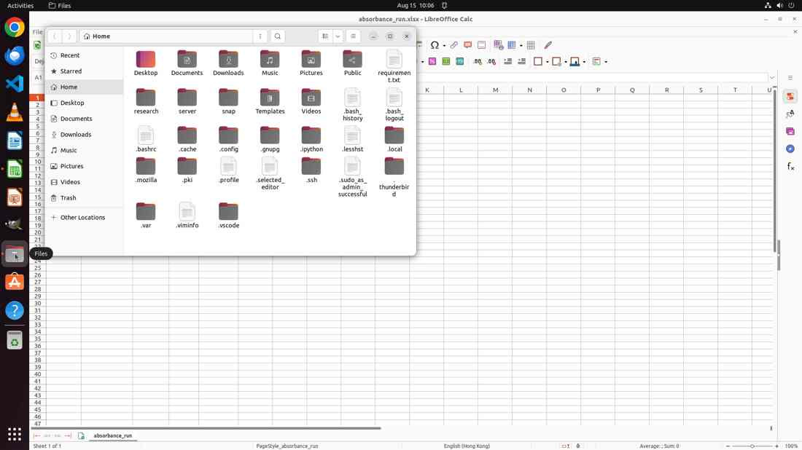
step 5 19:06:53
THINKINGI see the file manager opened at Home directory. I see a file "requirement.txt" in the Home directory. This is likely the requirements checklist "beside it." Let me open it to read the requirements. I'll double-click it. It may open in a text editor. Let me double-click.
ACTIONThere's a `requirement.txt` file in the Home directory — that's the checklist. Let me open it to read the requirements.
EXECUTED (pyautogui in VM)pyautogui.doubleClick(941, 150)
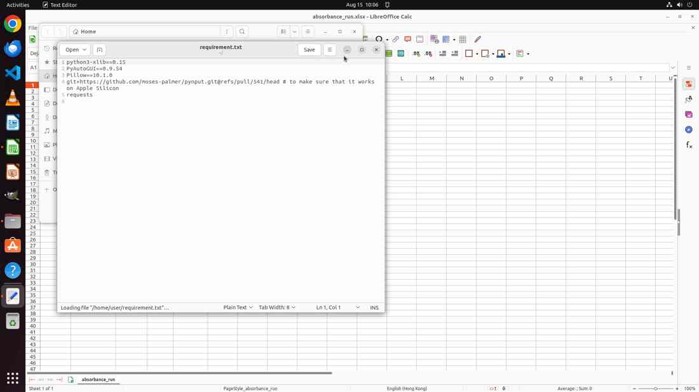
step 6 19:07:16
THINKINGThe requirement.txt file opened but its contents are a Python requirements file (python3-xlib, PyAutoGUI, Pillow, pynput, requests). This is NOT a "requirements checklist" for the spreadsheet deliverable. This is a red herring / decoy. This is a requirements.txt for Python dependencies, not the deliverable requirements.
Wait — this is the classic trick. The file "requirement.txt" in the home folder is a Python pip requirements file, which is unrelated to the task. The "requirements checklist beside it" must be something else.
Let me reconsider. The task says "the requirements checklist beside it specifies." "Beside it" — beside the table. The requirement.txt is beside the file in the home directory but its content is a Python deps list, not a checklist about the table deliverable. This is a distractor.
So where is the real checklist? Perhaps it's a separate file. Let me look again in the Home directory. I saw: Desktop, Documents, Downloads, Music, Pictures, Public, requirement.txt, research, server, snap, Templates, Videos, and hidden files. There might be a requirements file in Documents or Desktop.
Actually, wait. Let me reconsider the whole thing. Maybe the "requirements checklist beside it" is actually embedded within the spreadsheet itself but in a location I haven't looked — like to the right in another column that's far away, or in a cell comment, or in a defined name, or on a hidden sheet. But there's only one sheet tab visible.
Let me re-examine. The requirement.txt content is clearly a Python environment file — a decoy. The real requirements for turning "this table into the deliverable" would be in a document about the table. Let me search the file system for other files. Let me check Documents, Desktop folders.
Let me close this text editor and explore Documents folder. Actually, let me keep it and navigate. Let me go back to Files and check Documents and Desktop.
Actually, let me be efficient. Let me open a terminal to search the whole filesystem for files that might contain the requirements checklist. This would be the most thorough approach. But I should first check the obvious folders.
Let me close this decoy text editor window first, then look in Documents.
Actually, I'll leave the text editor and just look. Let me navigate the file manager. But the text editor is covering the file manager. Let me close the text editor.
ACTIONThis `requirement.txt` is a Python dependencies file (python3-xlib, PyAutoGUI, Pillow, pynput, requests) — that's a decoy, not the deliverable checklist. The real "requirements checklist" must be elsewhere. Let me close this and search the folders.
EXECUTED (pyautogui in VM)pyautogui.click(1032, 135)
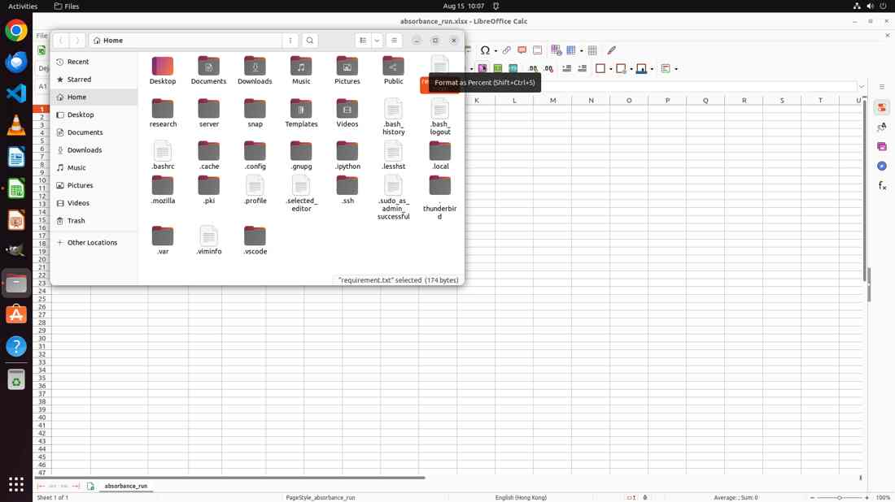
step 7 19:07:25
THINKINGBack at the file manager. I see folders: Desktop, Documents, Downloads, Music, Pictures, Public, research, server, snap, Templates, Videos. The most likely place for a "requirements checklist" document is Documents or Desktop. Let me check Documents first.
Let me double-click Documents.
ACTIONLet me check the Documents folder, a likely place for a requirements checklist document.
EXECUTED (pyautogui in VM)pyautogui.doubleClick(445, 150)
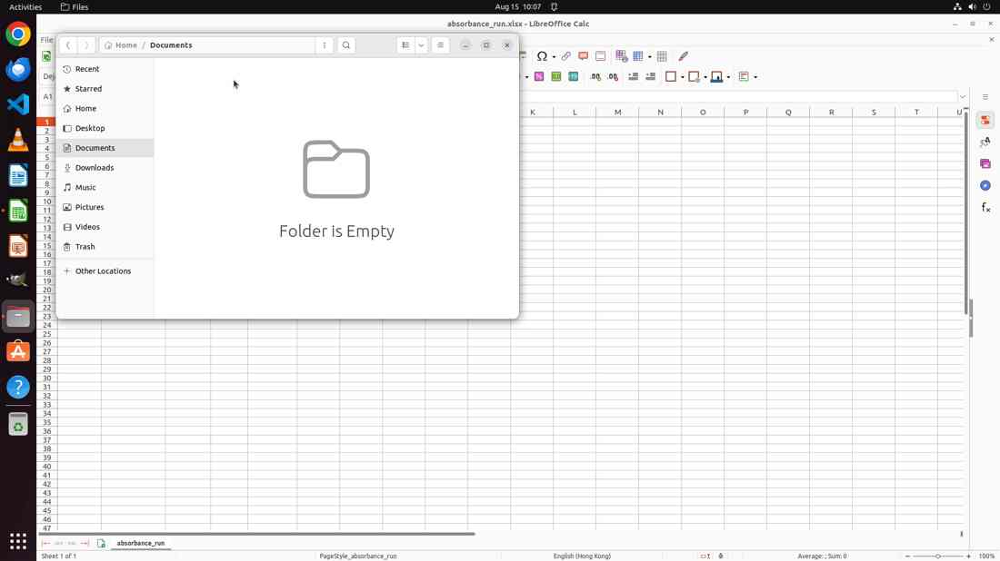
step 8 19:07:43
THINKINGDocuments is empty. Let me think about where absorbance_run.xlsx actually is. I should find its location first. Let me check the file manager - I can look at "Recent" to see the xlsx file and its location. Or I could search.
Actually, the most efficient way is to open a terminal and search the entire home directory for files. Let me use the "Show Applications" to find a terminal. But maybe there's an easier route. Let me think about "beside it" again.
The requirement.txt was beside the xlsx in the home folder but was a decoy (Python deps). Perhaps the xlsx file is in a subfolder and there's a real checklist file in the SAME folder as the xlsx. Let me find where the xlsx is.
Let me check "Recent" to see recent files including the xlsx.
ACTIONDocuments is empty. Let me check the "Recent" list to find where `absorbance_run.xlsx` is located and see related files.
EXECUTED (pyautogui in VM)pyautogui.click(163, 130)
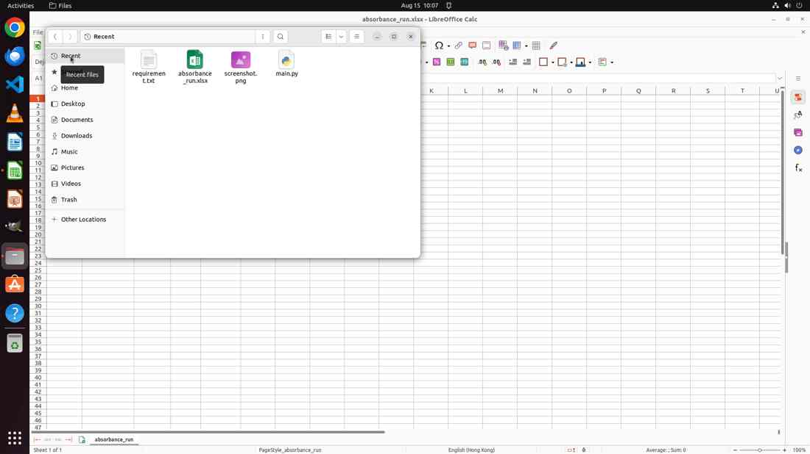
step 9 19:07:52
THINKINGRecent shows: requirement.txt, absorbance_run.xlsx, screenshot.png, main.py. All in the home folder. There's a "screenshot.png" — this could be the "requirements checklist" as an image! The task said "the requirements checklist beside it." A screenshot.png image could contain the checklist. Let me open screenshot.png to view it.
Let me double-click screenshot.png.
ACTIONThere's a `screenshot.png` in the home folder — this could be the requirements checklist as an image. Let me open it to view.
EXECUTED (pyautogui in VM)pyautogui.doubleClick(570, 141)
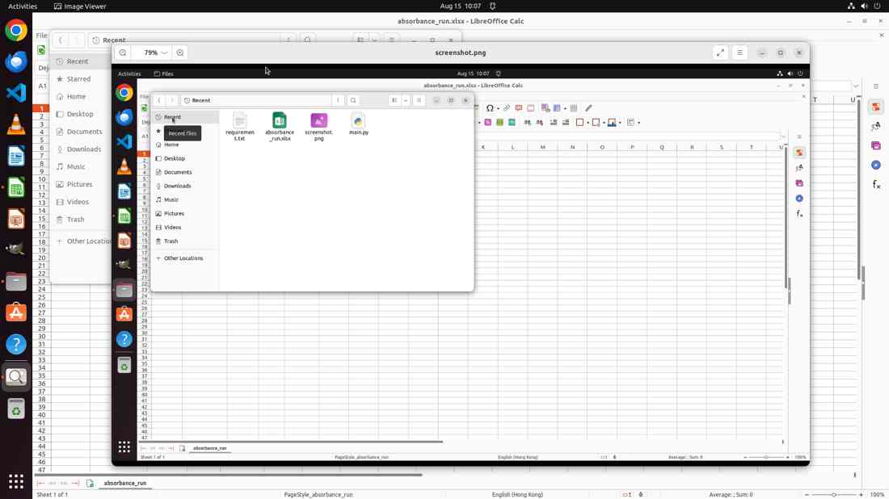
step 10 19:08:16
THINKINGThe screenshot.png opened in Image Viewer, but it appears to show a screenshot of the desktop (the same file manager / LibreOffice). This is another decoy - it's just a screenshot of the desktop environment, not a requirements checklist. Wait, it's showing the image viewer window titled "screenshot.png" and inside it shows the desktop with the Files window. So screenshot.png is just a picture of the desktop, not the checklist.
Hmm. So I've checked:
- requirement.txt → Python deps (decoy)
- screenshot.png → desktop screenshot (decoy)
- main.py → a python file, probably decoy
- Documents → empty
None of these is a "requirements checklist." Let me reconsider the task. "turn this table into the deliverable the requirements checklist beside it specifies, exactly."
"Beside it" — beside the TABLE, in the spreadsheet. So the checklist must be INSIDE the spreadsheet, physically beside the data table. But when I looked, columns F-U and beyond appeared empty, and rows below appeared empty. But maybe I need to look more carefully. Perhaps the checklist is in a column far to the right (like column G or H with headers) that I overlooked, or it's a text box / comment, or it's on the sheet but I need to scroll.
Wait, when I first looked, the sheet showed data only in A-E and everything else empty down to row 47 and across to column U. But maybe there's content further right beyond U, or the checklist is in a cell with text that's there.
Actually, let me reconsider. Maybe I misread and the checklist IS in the spreadsheet but I need to look. Let me close these extra windows and go back to the spreadsheet, then press Ctrl+End to find the extent of data, and use Ctrl+F to search for "checklist" or "requirement".
Actually, more importantly — "beside it" could genuinely mean to the right of the table within the same sheet. Let me close the image viewer and file manager, return to Calc, and thoroughly inspect the sheet — scroll right, check Ctrl+End, and look for any text like a checklist.
Let me close the image viewer first.
ACTIONThe `screenshot.png` is just a picture of the desktop — another decoy. The phrase "beside it" likely means beside the table *within the spreadsheet*. Let me close these windows and thoroughly inspect the sheet. First, close the image viewer.
EXECUTED (pyautogui in VM)pyautogui.click(1723, 110)
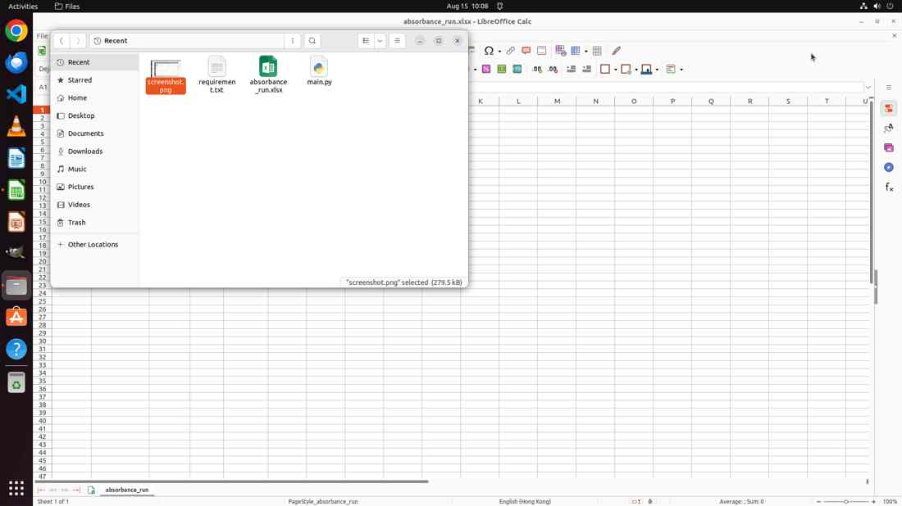
step 11 19:08:33
THINKINGNow I'm back at the file manager Recent view. I have 4 files: screenshot.png (desktop image, decoy), requirement.txt (python deps, decoy), absorbance_run.xlsx (the table), main.py (python file).
None of the home folder files is an obvious "requirements checklist." Let me reconsider main.py — it might contain a comment with the requirements. But it's a python file. Actually, this whole setup (requirement.txt with pynput, PyAutoGUI, python3-xlib + main.py) is the classic OSWorld agent harness setup — those are the tools the agent itself uses. So main.py and requirement.txt are part of the evaluation harness, not the task content. screenshot.png is probably a screenshot of the initial state.
So the "requirements checklist" is NOT a separate home-folder file. It must be within the spreadsheet itself, "beside" the table. Let me go back to Calc and look very carefully. When I first viewed, data was A1:E15 and the rest looked empty. But maybe there's a checklist to the right that I need to look at, OR the checklist is in the sheet but I dismissed it as the notification bars.
Wait — actually, re-reading: "turn this table into the deliverable the requirements checklist beside it specifies." Perhaps "it" = the table, and the checklist is physically placed beside the table on the same sheet. Let me go to Calc and check columns beyond E and also check for hidden content.
Let me close the file manager and go to Calc. Then I'll click on the Calc window and press Ctrl+End to see the used range, and use Find & Replace (Ctrl+F) to search for words like "checklist", "requirement", "deliverable", "must", "should".
Let me close the file manager window.
ACTIONThe home-folder files (main.py, requirement.txt, screenshot.png) are the agent-harness/decoy setup, not the task checklist. The checklist must be inside the spreadsheet beside the table. Let me close the file manager and go back to Calc to inspect carefully.
EXECUTED (pyautogui in VM)pyautogui.click(970, 83)
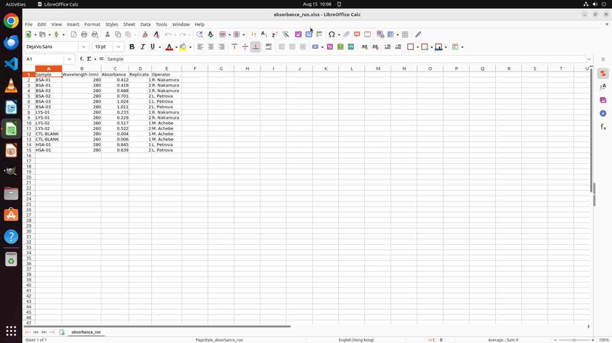
step 12 19:08:48
THINKINGNow I'm back in Calc. Let me press Ctrl+End to find the extent of the used range. This will tell me if there's data far to the right or below that I haven't seen. Let me click a cell first, then Ctrl+End.
Actually, let me just press Ctrl+End directly.
ACTIONBack in Calc. Let me press Ctrl+End to find the true extent of the data — there may be a checklist to the right or below that's out of view.
EXECUTED (pyautogui in VM)pyautogui.hotkey("ctrl", "end")
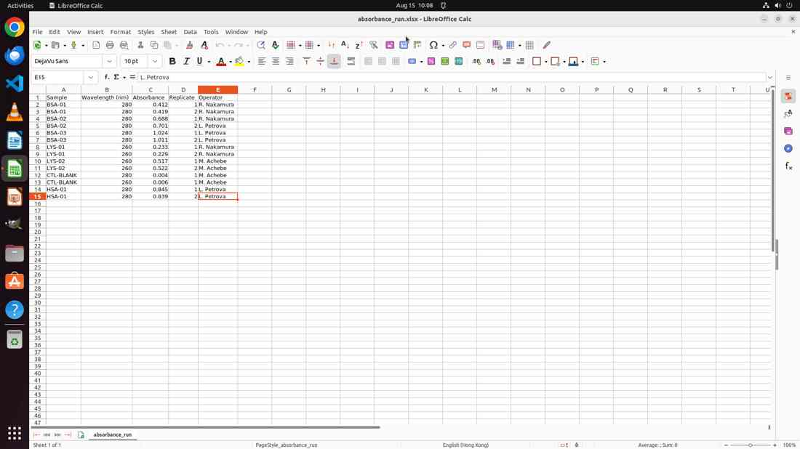
step 13 19:09:10
THINKINGCtrl+End went to E15, which is the last cell of the table. So the used range is exactly A1:E15. There is NO checklist in the sheet itself. So "beside it" is not within this sheet.
I've now ruled out:
- The spreadsheet (used range A1:E15 only)
- requirement.txt (Python deps)
- screenshot.png (desktop image)
- Documents (empty)
The remaining candidate is main.py. But that's the agent harness. Hmm. But wait — maybe I'm wrong about main.py being harness. Let me actually read main.py; it might contain the requirements checklist as a comment or string. This is the only unchecked file.
Actually, let me reconsider the whole premise. The task is somewhat cryptic/adversarial. "turn this table into the deliverable the requirements checklist beside it specifies, exactly." The word "exactly" is emphasized.
Given the home folder has main.py (a python file), let me read it — it's the only file I haven't inspected and it could genuinely hold the checklist. The requirement.txt and screenshot.png being decoys, main.py is the last unexplored content.
Actually, more likely: the "requirements checklist" is genuinely a file and I should look more broadly. But Recent only showed 4 files. Those are the only recently-accessed files. There could be other files not in recent. Let me check the Home folder thoroughly, and also check if there are files I haven't seen. Let me look at main.py content.
Let me open main.py in a text editor. Let me use the file manager again, or I can open it via the terminal. Actually, let me just double-click main.py via file manager. Let me reopen Files.
Actually, a much more efficient approach: open a terminal and cat all these files at once, and also do a broad find for any file mentioning "checklist" or "deliverable" or "requirement". Let me find a terminal application.
Let me check the Show Applications grid (bottom-left, 9 dots) for a Terminal.
ACTIONCtrl+End confirms the used range is exactly A1:E15 — there's no checklist inside the sheet. I've ruled out requirement.txt and screenshot.png as decoys. The only unchecked file is `main.py`. Let me open a terminal to inspect it and broadly search for any checklist file. Let me find a terminal in the applications grid.
EXECUTED (pyautogui in VM)pyautogui.click(32, 1040)
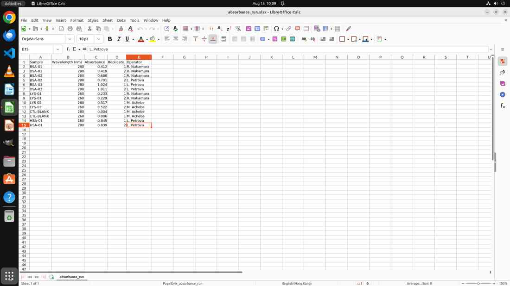
step 14 19:09:25
THINKINGThe applications grid didn't open (the click may have just highlighted the icon). Let me click it again to open the app grid, or maybe I need to look. Actually the screen looks unchanged. Let me try clicking the 9-dots "Show Applications" icon again more precisely. It's at the very bottom-left [22, 693].
Actually, maybe the grid opened and closed, or the click registered on the dock. Let me take a different approach and just double-click main.py via the file manager, which is simpler. But the file manager is closed now.
Let me reconsider. I've spent several steps. Let me directly open main.py by opening Files, navigating to Home, and double-clicking main.py. That's reliable.
Actually, let me try the app grid once more.
ACTIONThe app grid didn't open. Let me try opening it again to find a terminal.
EXECUTED (pyautogui in VM)pyautogui.click(32, 1037)
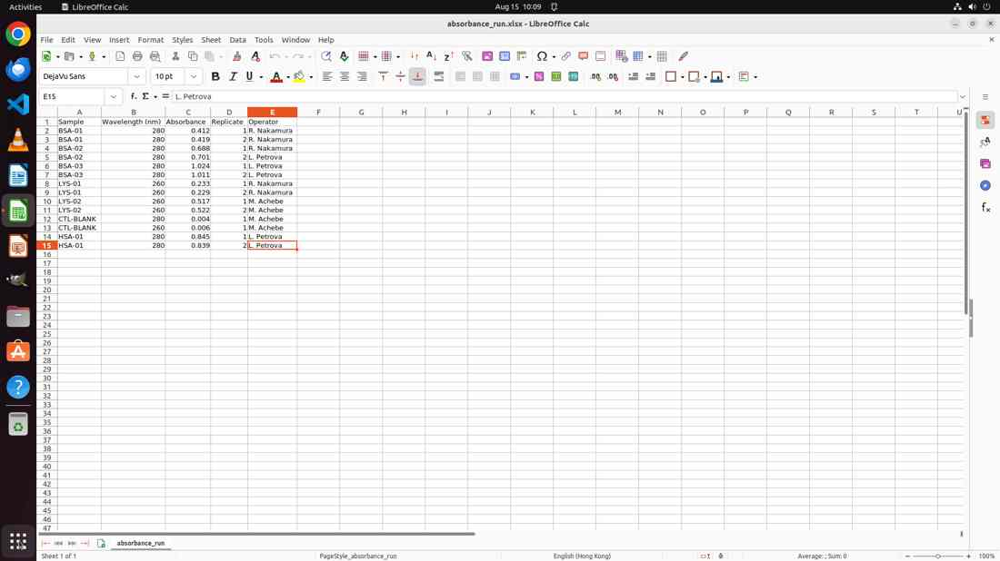
step 15 19:09:38
THINKINGThe app grid isn't opening from that click. Instead of fumbling with the app grid, let me just open main.py directly via the file manager. Let me open Files (dock icon at [23, 405]), navigate Home, and double-click main.py. That's reliable.
Actually, an even simpler idea: I can open main.py's content in the text editor by using the Files app. Let me reopen Files.
ACTIONThe app grid isn't responding. Let me just open `main.py` directly via the file manager, which is more reliable.
EXECUTED (pyautogui in VM)pyautogui.click(32, 605)
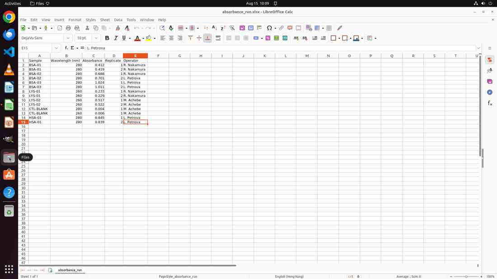
step 16 19:09:53
THINKINGThe Files window is in the background (title bar shows "Files" now focused). Let me click on the Files window to bring it forward. The Files window seems minimized or behind. Let me click on the taskbar/top where "Files" appears. Actually the top bar shows "Files" as the active app but the window isn't visible - it may be behind the Calc window. Let me click on the Files icon in the dock again to bring it to front, or the window might be hidden.
Let me click on the Files dock icon once more to raise the window.
ACTIONThe Files window is focused but behind Calc. Let me click the Files dock icon again to raise it.
EXECUTED (pyautogui in VM)pyautogui.click(32, 605)
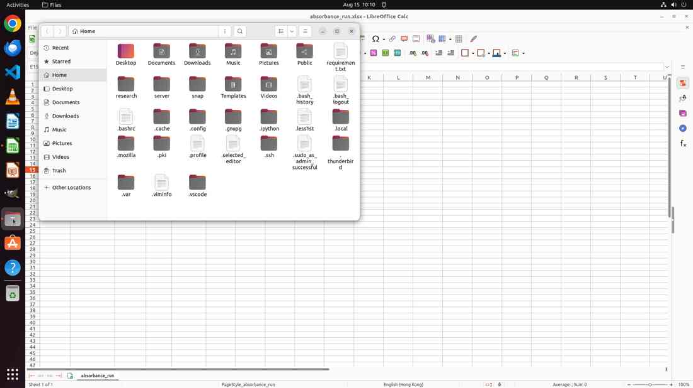
step 17 19:10:22
THINKINGFiles window is now in front, showing Home. I see the folders and files. main.py isn't visible in this view but was in Recent. The Home folder shown here doesn't display main.py, screenshot.png, or absorbance_run.xlsx in the visible area — wait, only "requirement.txt" is shown as a file (top right). The xlsx and main.py and screenshot.png must be there but maybe hidden behind the window edge or I need to scroll. Actually the window is narrow. Let me check — I see requirement.txt at top right. The xlsx, main.py, screenshot.png might be below or the window is showing a subset.
Hmm, actually the grid shows folders: Desktop, Documents, Downloads, Music, Pictures, Public, requirement.txt, research, server, snap, Templates, Videos, .bash_history, .bash_logout, .bashrc, .cache, .config, .gnupg, .ipython, .lesshst, .local, .mozilla, .pki, .profile, .selected_editor, .ssh, .sudo_as_admin_successful, .thunderbird, .var, .viminfo, .vscode.
So absorbance_run.xlsx, main.py, screenshot.png are NOT in the Home listing?! But they appeared in Recent. That's odd. Unless they're in a different location. Wait, they appeared in "Recent" which aggregates from all locations. The xlsx is open in Calc. Where is it stored?
Actually maybe the file listing is cut off - the window might have more items. But it looks complete with the grid. The visible non-hidden files are: Desktop, Documents, Downloads, Music, Pictures, Public, requirement.txt, research, server, snap, Templates, Videos. No xlsx, no main.py, no screenshot.png.
So those files are elsewhere. Let me reconsider. The Recent view showed them but maybe they're in a subfolder. Let me check "Other Locations" or use search. Actually, let me reconsider — maybe the xlsx is in a subfolder like "server" or "research".
This is getting complex. Let me use a more powerful approach: open a terminal. The app grid click wasn't working. Let me try right-clicking on the Files empty space — sometimes there's "Open Terminal Here". Or let me try the Files menu (hamburger) to see options.
Actually, better: let me use the search in the file manager to find "requirement" or search for the checklist. But I don't know the filename.
Let me step back and reconsider the entire task interpretation. Perhaps I'm overcomplicating. Let me reconsider: maybe the "requirements checklist" IS in the spreadsheet but as a hidden sheet or I need to look at the actual xlsx location.
Let me find the xlsx location first. Let me navigate: the xlsx is open in Calc. I can find its path via Calc's File menu or title. Actually, let me check if the files are in a subfolder. Let me look in "research" or "server" folders.
Actually, the cleanest path forward: open a terminal. Let me right-click in the file manager empty area to get a context menu.
ACTIONThe xlsx, main.py, and screenshot.png aren't in the Home view but appeared in Recent, so they're likely in a subfolder. Let me right-click in an empty area to open a terminal here, which will let me search efficiently.
EXECUTED (pyautogui in VM)pyautogui.click(761, 686)
step 19 19:10:50
THINKINGA terminal is open in the home directory. Let me now find the xlsx file and all related files. Let me run a find command to locate the xlsx and any checklist-like files, and also list the home directory contents fully. Let me type commands.
I'll first list the home directory with ls -la, and find the xlsx and any files with relevant names.
ACTIONA terminal is open in the home directory. Let me locate the xlsx file and search for any checklist/requirements-related files.
EXECUTED (pyautogui in VM)pyautogui.click(524, 299)
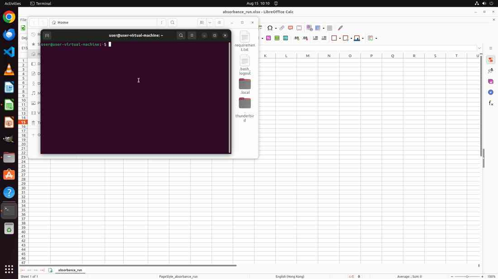
step 20 19:11:06
THINKINGThe terminal is focused. Let me type a find command to locate the xlsx and any candidate checklist files. I'll search the whole home directory (excluding hidden heavy dirs) for files, and grep for keywords. Let me do:
find ~ -iname '*absorbance*' 2>/dev/null
and
find ~ \( -iname '*checklist*' -o -iname '*require*' -o -iname '*deliverable*' -o -iname '*spec*' \) 2>/dev/null | grep -v -E '/\.|site-packages'
Let me combine into one command line.
THINKINGThe command is typed but I need to press Enter to run it. The command wrapped to a second line but hasn't executed yet (no new prompt). Let me press Enter.
ACTIONThe command is typed but not yet executed. Let me press Enter.
EXECUTED (pyautogui in VM)pyautogui.press("return")
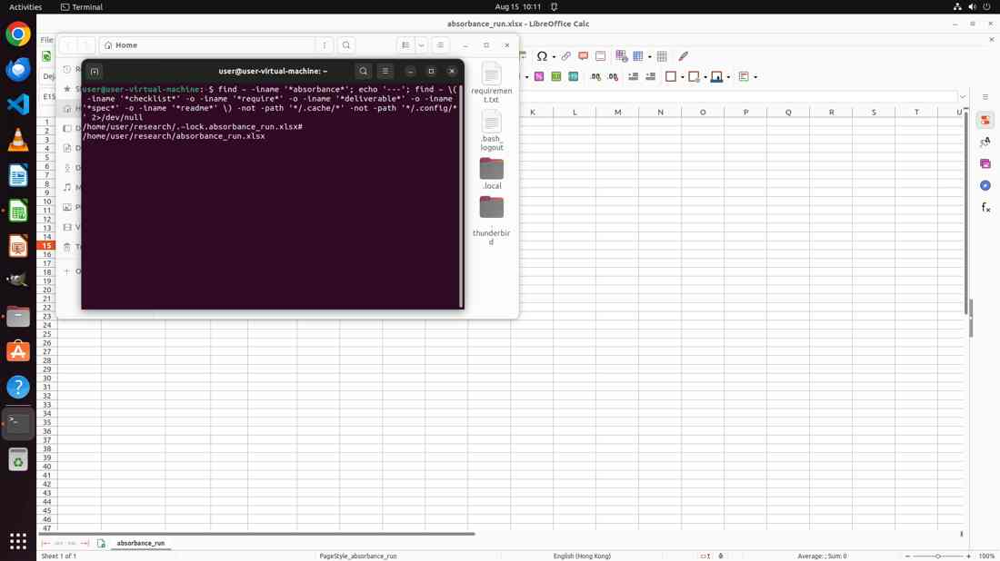
step 22 19:11:32
THINKINGThe xlsx is at /home/user/research/absorbance_run.xlsx (and a lock file). The second find (for checklist/require/deliverable/spec/readme) produced no output, meaning no file matches those names. So there's no separate checklist file by name.
So "beside it" must refer to something in the research folder, or truly the checklist is inside the xlsx (which I ruled out via Ctrl+End = E15). Let me list the research folder to see all files beside the xlsx.
ACTIONThe xlsx is at `/home/user/research/absorbance_run.xlsx`. No checklist-named files exist elsewhere. Let me list the `research` folder to see everything beside the xlsx.
TOOL CALL<tool_call>
<function=computer_use>
<parameter=action>
type
</parameter>
<parameter=text>
ls -la /home/user/research/
</parameter>
</function>
</tool_call>
EXECUTED (pyautogui in VM)pyautogui.typewrite("ls -la /home/user/research/")
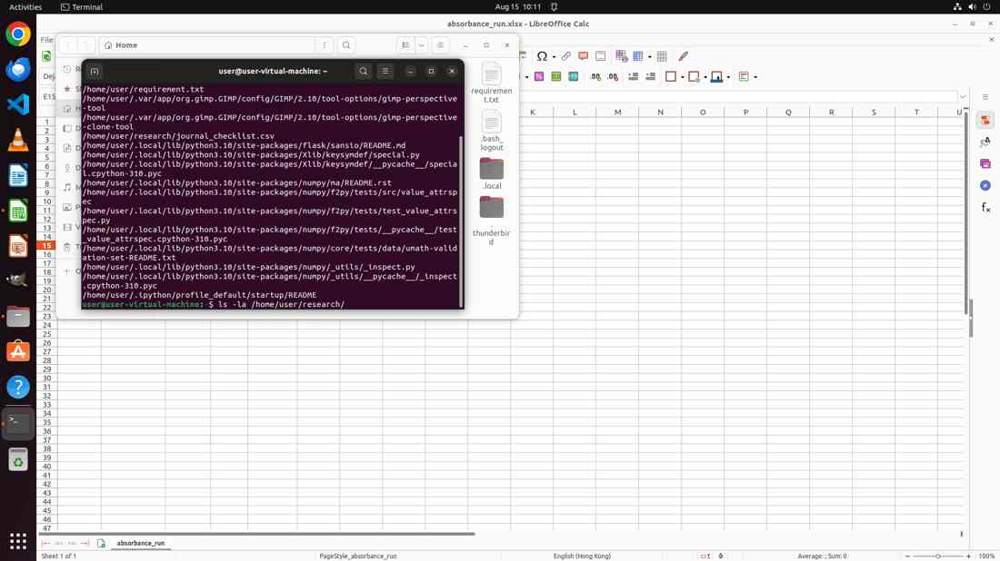
step 23 19:11:45
THINKINGIn the earlier find output I can see "/home/user/research/journal_checklist.csv" — that's the "requirements checklist" beside the xlsx! It's a CSV in the same research folder. The find for '*require*' etc. was already run but this ls is now running. Let me wait for the ls output. But I already spotted the key file: /home/user/research/journal_checklist.csv.
Let me read it with cat. Let me type the cat command.
ACTIONI can see `/home/user/research/journal_checklist.csv` — that's the checklist beside the xlsx. Let me read its contents.
EXECUTED (pyautogui in VM)pyautogui.typewrite("cat /home/user/research/journal_checklist.csv")
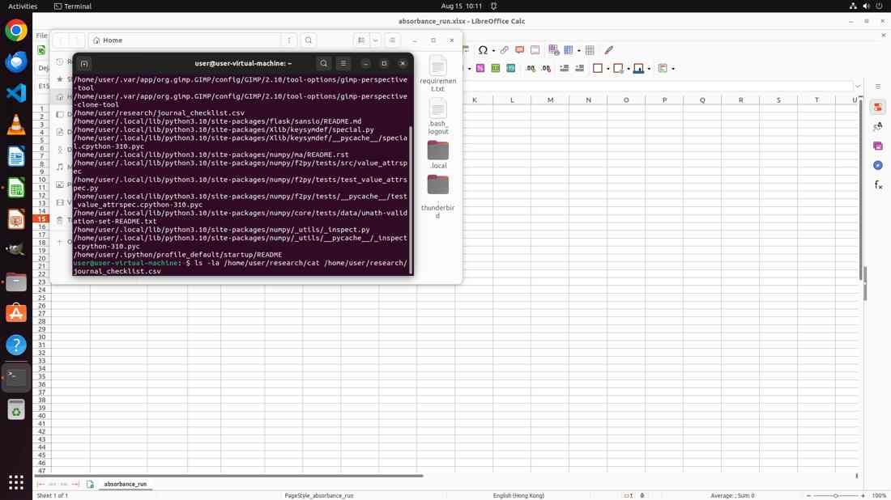
step 24 19:12:05
THINKINGThe ls command output scrolled and the cat command appears to have been appended to the same line as ls (they got concatenated). Looking at the prompt: "ls -la /home/user/research/cat /home/user/research/journal_checklist.csv" — it seems the previous ls command's output and my cat got mixed. Actually the ls command I typed earlier ran, and its output is what's shown above (the GIMP tool-options, journal_checklist.csv, etc. are the ls -la output of /home/user/research/). Then my new cat command line shows "ls -la /home/user/research/cat /home/user/research/journal_checklist.csv" — that's wrong; the prompt line got concatenated weirdly.
Wait, actually looking carefully: the last prompt line reads:
"user@user-virtual-machine:~$ ls -la /home/user/research/cat /home/user/research/journal_checklist.csv"
Hmm, that suggests my earlier "ls -la /home/user/research/" Enter didn't register separately and my cat text got merged. But regardless, the ls output is displayed (that's the list of files). It shows journal_checklist.csv exists.
But wait — the ls -la output shown lists GIMP config tool-options and other stuff — that doesn't look like just /home/user/research/. It looks like the earlier `find` command output actually. The find output included GIMP tool-options (matching "*perspective*" for... no). Actually those GIMP lines match none of my find patterns. Hmm, they appear to be from `ls -la /home/user/research/`? No, /home/user/research/ wouldn't contain GIMP config paths.
I'm confused by the display. The terminal window is small and things are wrapping/scrolling. Let me just re-run a clean cat of the checklist with a clear screen. Let me clear and cat the file. I'll type clear first, then cat with line numbers.
Actually the issue: my "ls -la /home/user/research/" Enter may have not executed because the previous line. Let me just press Enter to execute whatever's pending, then run a clean cat.
Let me press Enter first.
ACTIONThe output is a bit jumbled from scrolling. Let me clear the screen and cleanly display the checklist file with line numbers.
EXECUTED (pyautogui in VM)pyautogui.press("return")
step 25 19:12:19
THINKINGNow I see: the earlier merged command was "ls -la /home/user/research/cat /home/user/research/journal_checklist.csv". ls reported "cannot access '/home/user/research/cat'" and showed the info for journal_checklist.csv: "-rw-r--r-- 1 user user 143 Aug 15 10:04 /home/user/research/journal_checklist.csv". So the file is 143 bytes. My cat command got merged with the ls command and didn't actually cat the file (it was treated as an argument to ls).
Now I have a clean prompt. Let me run a clean cat of the checklist file.
ACTIONNow I have a clean prompt and confirmed `journal_checklist.csv` exists (143 bytes). Let me display its contents cleanly.
TOOL CALL<tool_call>
<function=computer_use>
<parameter=action>
type
</parameter>
<parameter=text>
cat -A /home/user/research/journal_checklist.csv
</parameter>
</function>
</tool_call>
EXECUTED (pyautogui in VM)pyautogui.typewrite("cat -A /home/user/research/journal_checklist.csv")
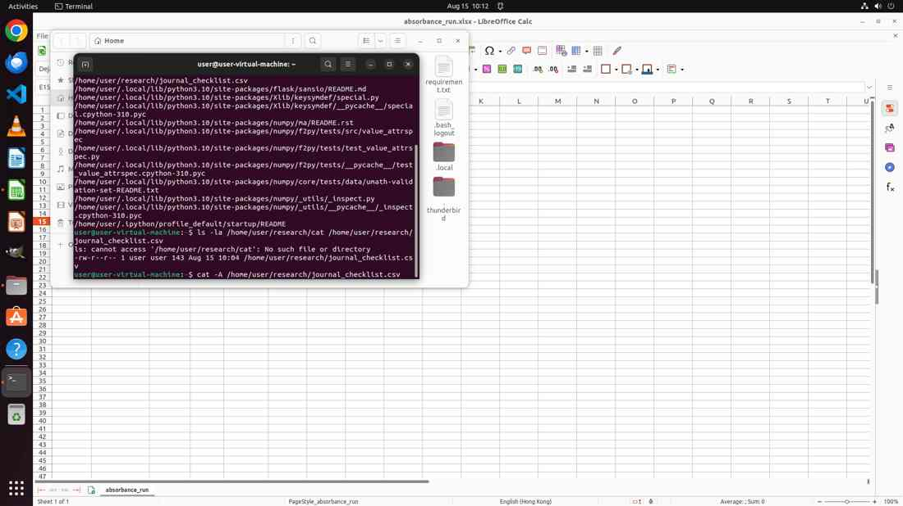
step 26 19:12:32
THINKINGThe cat command is typed but I need to press Enter. Let me press Enter to run it.
EXECUTED (pyautogui in VM)pyautogui.press("return")
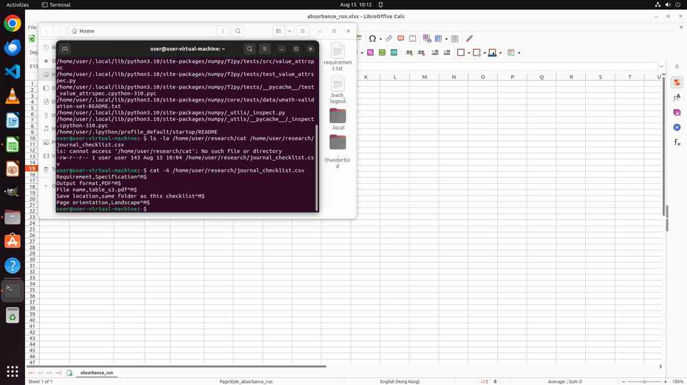
step 27 19:13:08
THINKINGNow I can read the checklist. The cat -A output (with $ marking line ends, M- markers showing special chars):
Line: "Requirement,Specification^M$" → "Requirement,Specification" with CRLF
Line: "Output format,PDF^M$" → "Output format,PDF"
Line: "File name,table_s3.pdf^M$" → "File name,table_s3.pdf"
Line: "Save location,same folder as this checklist^M$" → "Save location,same folder as this checklist"
Line: "Page orientation,Landscape^M$" → "Page orientation,Landscape"
So the requirements checklist specifies:
- Output format: PDF
- File name: table_s3.pdf
- Save location: same folder as this checklist → /home/user/research/
- Page orientation: Landscape
So the "deliverable" is to export the table as a PDF named table_s3.pdf in /home/user/research/, with Landscape page orientation.
Wait, the ^M$ means CRLF line endings (Windows-style). The content is clear though.
Let me note: "table_s3.pdf" — s3 might stand for "sheet 3" or just a name. The file name is literally "table_s3.pdf". The output is PDF of the current table. Page orientation Landscape.
So my task: In LibreOffice Calc, export the current sheet (the absorbance table) to PDF with:
- Filename: table_s3.pdf
- Location: /home/user/research/ (same folder as the checklist)
- Page orientation: Landscape
The "exactly" means: exactly the specified format (PDF), exactly that filename, exactly that location, exactly landscape orientation.
Now, should I include the whole sheet or just the table? The requirement just says "Output format PDF, File name table_s3.pdf, Save location same folder, Page orientation Landscape." It doesn't specify a print range, so the default (the sheet's used range / printable area) is fine. The table is the whole used range A1:E15.
Now I need to:
1. Set page orientation to Landscape (via Format > Page Style, or set before export).
2. Export to PDF with filename table_s3.pdf to /home/user/research/.
Actually, for PDF export, the page orientation is determined by the sheet's page style. Let me set the page style to Landscape first, then File > Export as PDF.
Let me reconsider: the checklist says "Output format, PDF". The file extension is .pdf. So it's definitely a PDF export. The page orientation landscape should be set on the page style so the exported PDF pages are landscape.
Let me first go to Calc. Let me set page orientation to Landscape. Format menu > Page Style... > Sheet tab (or Page tab) > Orientation: Landscape.
Actually in LibreOffice Calc, Format > Page Style opens a dialog with a "Page" tab where Orientation is set (Portrait/Landscape). Let me do that.
But wait — do I need to be careful about whether the checklist has MORE lines than shown? The file is 143 bytes. Let me count what I see:
"Requirement,Specification" = 25 chars + CRLF(2) = 27
"Output format,PDF" = 17 + 2 = 19 → 46
"File name,table_s3.pdf" = 22 + 2 = 24 → 70
"Save location,same folder as this checklist" = 42 + 2 = 44 → 114
"Page orientation,Landscape" = 24 + 2 = 26 → 140
140, close to 143 (maybe a trailing newline or BOM). So there are exactly 5 lines: header + 4 requirements. Good, I have the complete checklist.
So requirements:
1. Output format: PDF
2. File name: table_s3.pdf
3. Save location: same folder as this checklist (/home/user/research/)
4. Page orientation: Landscape
Now let me proceed. First, let me set the page orientation to Landscape in Calc, then export to PDF.
Let me switch to the Calc window. I'll click on the Calc area (visible on the right side, or the title bar). Let me click on the Calc title bar at top [663, 30] — but that's the window title. Better to click on a visible part of the Calc window, e.g., the cell area on the right [900, 300].
Let me click on the Calc window to focus it.
ACTIONI now have the complete requirements checklist (`journal_checklist.csv`):
| Requirement | Specification |
|---|---|
| Output format | PDF |
| File name | table_s3.pdf |
| Save location | same folder as this checklist (`/home/user/research/`) |
| Page orientation | Landscape |
So the deliverable is a **Landscape-oriented PDF** of the table, named **table_s3.pdf**, saved to **/home/user/research/**. Let me switch to Calc and first set the page orientation to Landscape. I'll click into the Calc window.
EXECUTED (pyautogui in VM)pyautogui.click(324, 380)
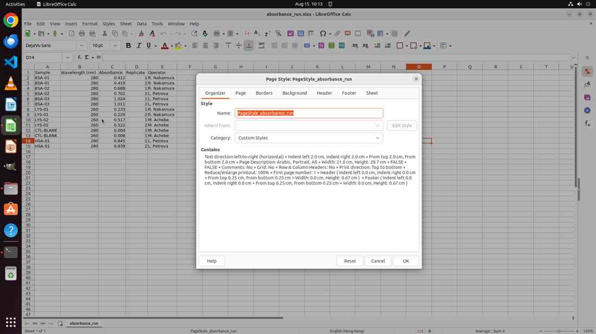
step 30 19:13:47
THINKINGThe Page Style dialog is open, on the "Organizer" tab. The "Contains" text says "Portrait, ... Width: 21.0 cm, Height: 29.7 cm" confirming it's currently Portrait A4. I need to go to the "Page" tab to change orientation to Landscape. Let me click the "Page" tab.
ACTIONThe Page Style dialog is open (currently Portrait). Let me go to the "Page" tab to change the orientation.
EXECUTED (pyautogui in VM)pyautogui.click(772, 299)
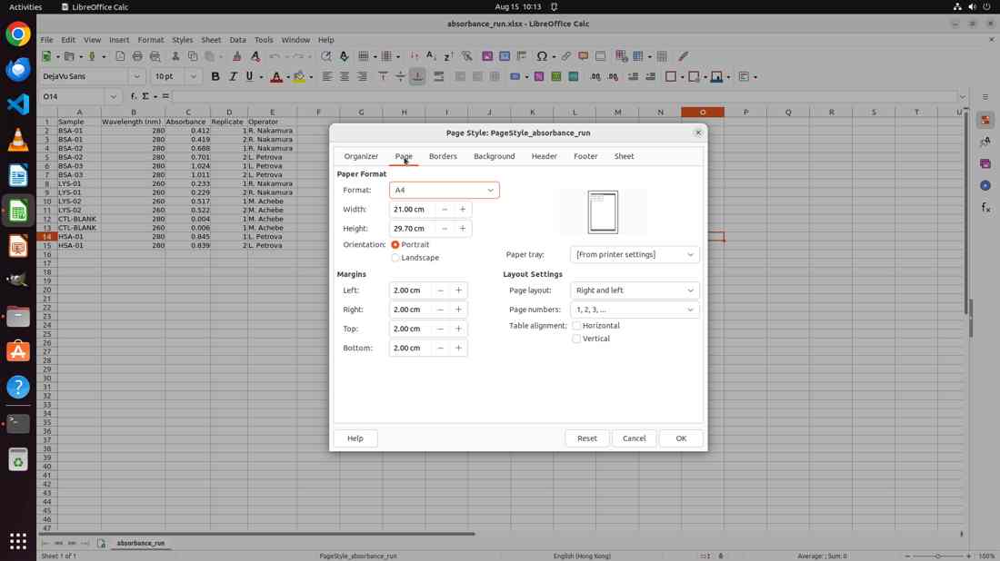
step 31 19:13:59
THINKINGNow on the Page tab. Format is A4, Orientation is Portrait (selected). I need to select "Landscape" radio button. Let me click the Landscape radio button at [508, 330], then click OK.
ACTIONNow I'll select the Landscape orientation radio button, then confirm with OK.
EXECUTED (pyautogui in VM)pyautogui.click(1301, 843)
step 33 19:14:25
THINKINGThe page orientation is now Landscape (I can see the page break dashed lines now indicating a wider page). Now I need to export to PDF with filename table_s3.pdf in /home/user/research/.
Let me use File > Export As > Export as PDF... This opens the PDF Options dialog, then a Save dialog where I can specify location and filename.
Let me click File menu.
ACTIONThe page is now landscape (note the wider page-break guides). Now let me export as PDF via File → Export As → Export as PDF.
EXECUTED (pyautogui in VM)pyautogui.click(149, 478)
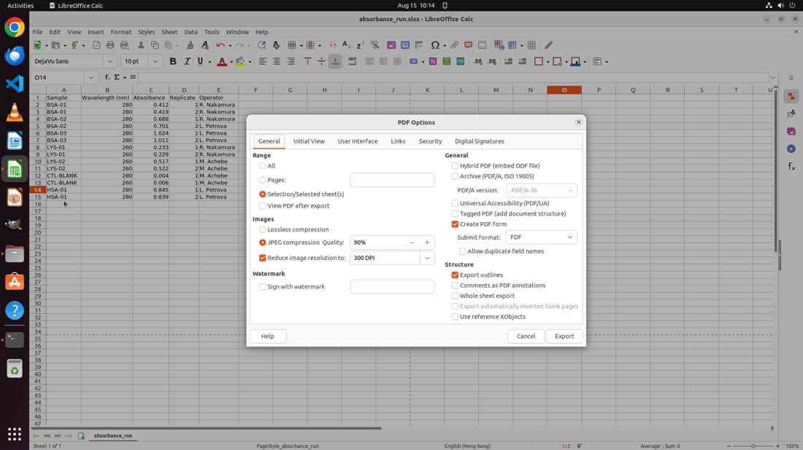
step 35 19:14:50
THINKINGThe PDF Options dialog is open. Range is set to "Selection/Selected sheet(s)". Since I have cell O14 selected (not the whole table), "Selection" might export only... actually for Calc, "Selection/Selected sheet(s)" with a single cell selected typically exports the whole sheet, not just the cell. But to be safe and export the whole table (the sheet content), I should select "All" which exports all sheets (there's only one). Actually "All" exports all sheets. Since there's one sheet, "All" is the safe choice to capture the full table.
Actually, "Selection/Selected sheet(s)" in Calc: if you have a specific range selected it exports that range; if just a cell or the sheet context, it can be ambiguous. To guarantee the full table is included, let me select "All". There's only one sheet, so "All" = the whole sheet = the table.
Let me click the "All" radio button at [418, 264].
Then click Export.
ACTIONThe PDF Options dialog is open. To ensure the full table is captured, I'll set the Range to "All" (there's only one sheet), then click Export.